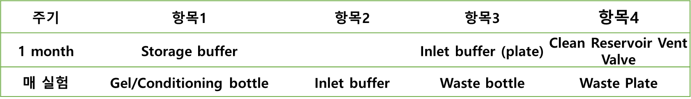

6 Nucleric acid fragment analysis
6.1 장비소개
96-capillary arrays
Running time:
ds930 Kit(75 bp - 20,000 bp): 96 samples in 1 hours (spec. 2,400 samples in 24 hours )
ds920 Kit(75 bp - 15,000 bp): 96 samples in 75 min
High-resolution separation: 2% accuracy
Broad assay portfolio
- gDNA, NGS libraries, DNA fragments, total RNA, small RNA mRNA vaccines
6.2 메뉴얼 파일 위치
share:\19_Equipment_장비_user’s_guide\5400 Fragment Analyzer
6.3 안내사항
장비 보증기간: 1년
Capillary 보증기간: 90일, 소모품이며 사용량에 따라 1-2년 사용 가능, 96 ea 가 일괄 교체로 진행 됨
분석하고자하는 sample에 따라 Kit 가 다름 (유효기간 4-6개월)
분해능이 떨어질 경우 0.5 N NaOH로 세척 (농도가 높을 경우 열이 발생될 수 있으므로 사용농도 주의)
waste tray (1 well plate): 세척하여 사용 가능
Inlet buffer tray (96 deep well plate, 1 ml): 1x로 희석하여 사용하며 1주일 주기로 교체 권장하나 사용량에 따라 다름
Storage buffer: 180 ul, 1달에 1회 교체 권장
Conditioning buffer (5X): 1x로 희석하여 사용, gel 과 동일 볼륨 사용
DW: HPLC grade로 사용 권장
6.4 사용 전 주의사항
6.5 하드웨어
6.6 Kit 종류 및 단가
유효기간이 짧아 국내 재고 없음, 해외발주로 진행되며 발주 시 6-8주 후 입고 됨.
실험 진행 전 미리 확인 필요함
상시재고는 3 plate (300 sample) 이상 확보할 것
6.6.1 사이즈 확인을 위한 정성제품군
6.6.2 사이즈와 농도 확인을 위한 정량제품군 (NGS QC 등)
6.7 사용법
6.7.1 Maintenance

Gel bottle: 매 실험마다 제조, 키트의 핵심.
Conditioning buffer (250 mL bottle): 5X stock를 1X로 희석하여 사용, gel buffe와 동일한 양이 사용됨
Marker Plate(96 well PCR Plate): 제조하여 5-6회 사용 가능, 사용 후 냉동보관하며 사용 전 해동하여 spin down 하여 장착
Storage buffer (96 well PCR Plate): 100 uL씩 분주하여 1달 주기로 교체, 별도 구매 품목
Inlet buffer (2 mL deep well plate): 5X stock를 1X로 희석하여 96 well plate에 1 mL씩 분주, 1달 주기로 Labware 교체
Clean Reservoir Vent Valve (노즐세척): DI water (3차 증류수 가능)을 이용하여 S/W상의 프로토콜에 따라 세척 진행
- Selecting this command from the Utilities menu opens the reservoir vent valve and the waste valve and displays the ‘Clean Reservoir Vent Valve’ window.
6.7.2 실험준비사항
Marker plate 제작 (다 회 사용으로 냉동실에 보관되어 있음, 녹여서 bubble 제거)
- Kit 마다 전용 marker 사용
Inlet buffer plate 제작 (Inlet buffer 20 ml + DW 80 ml)
Conditioning buffer 제조 (Conditioning buffer 8 ml + DW 32 ml)
Gel buffer 제조 (Gel 40 ml + dye 4 ul)
Sample plate 제작 (sample 2 ul + dilution buffer (TE) 22 ul), **H12는 무조건 ladder)
6.7.2.1 Buffer 보관 장소
- Marker/Gel/Ladder 는 Kit마다 다르고, Inlet/Conditioning/Dilution/dye 는 모든 키트 호환 가능함
6.7.3 Plate 장착
6.7.4 Running 준비
- bottle의 부피는 직접 기입해서 넣어줘야 함.
- 기입된 수치를 기준으로 사용된 양을 카운팅하여 마이너스로 적용됨
- *한 번에 여러 차례 돌릴 경우 한 번에 세팅해도 됨. (최대 6번)
- ex) 1회 : 40 ml / 2회 : 80 ml
6.7.5 분석 프로그램
-
주기적으로 버전이 업데이트됨, 버전이 달라도 데이터는 분석 가능
개인 PC 설치 가능
장비PC에서 데이터폴더 전체를 복사 후 이동하여 불러오기하여 분석